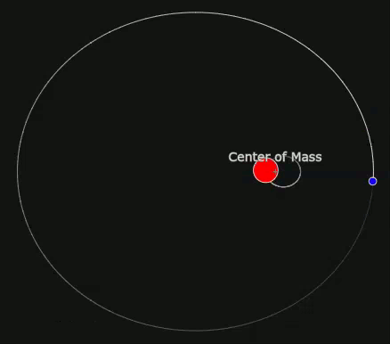

Dark Stars
This section should be prefaced with the specifics of what is being talking about. This is not about dark matter stars
also called dark stars, nor a type of object similar to black holes that are sometimes referred to as dark stars.
Anyways after classical mechanics widespread acceptance, some scientists and academics noticed odd quirks about the
preposed physics; a sort of eater of light, something that prevented its escape. Such a massive object back then was
expected to still be a sort of star, and so John Michell referred to them as "Dark Stars". Michell had, interestingly,
come to the conclusion that in order to confirm the existence of such a thing, he would have to look for a binary system
where the affects of a second star could be clearly seen. Today, we actually do just that, most confirmed black holes being
found and confirmed to exist by a method he figured. To me, it is unclear if he was the first to think of such a method,
but that is largely beside the point. Back in his time however, the best telescopes used achromatic lenses and had a paltry
range of view and sight compared to the modern equivalents. As such, even if he did see such a binary system, he would
not be able to discern what was in that system with any amount of clarity. That's also to say nothing of the possible
errors that would occur, such as labeling a black dwarf star as a dark star.
Furthermore, Michell actually came
to the conclusion that light would be shifted into the less energetic (red) part of the spectrum, however he cited
Newton's incorrect theory that blue light was less energetic. In the end, his conclusion was correct, but it cited
entirely incorrect information and thus any predictions that he made would also be rendered incorrect.
Cosmic Bullies
The easiest way to find black holes, other than looking to the center of galaxies, remains searching for them in the
same way as John Michell suggested. In fact, it seems at every part of their life-cycle black holes are bullies, and this
is true especially for the largest of them, though that is further expanded upon in the Black Hole Categorization page.
The closest known black hole is one such bully, Gaia BH1 which tosses its sibling star about, as is
pictured below. Please note, the smaller purple sibling is the star, and the larger red sibling is the black hole.
